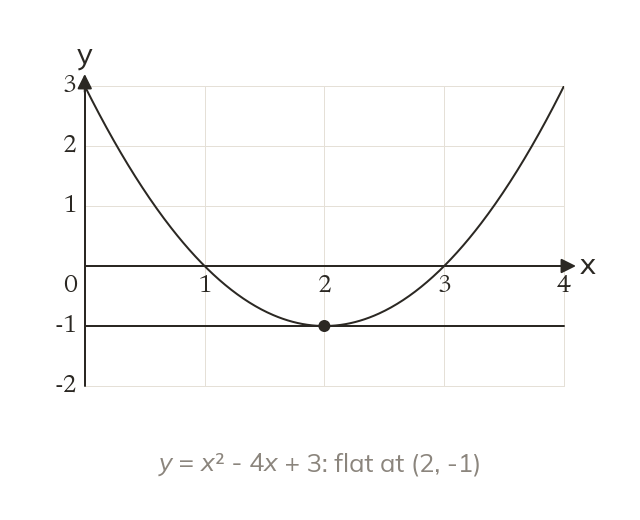
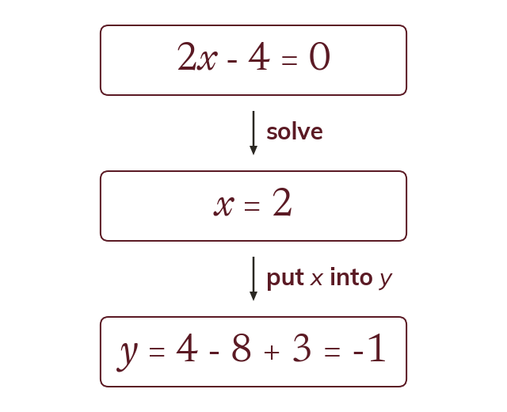
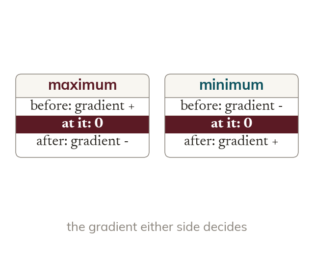

Flat for an instant
At a stationary point the gradient is zero. So stationary points come from solving dydx = 0.
Where a curve turns, its gradient is zero for an instant. Finding and classifying those points is the key to sketching curves and to every optimisation problem.
Work down the page at your own pace. Write every answer in your book first, then click to check it.
Read each card, then follow the worked examples one step at a time.

At a stationary point the gradient is zero. So stationary points come from solving dydx = 0.

Solving dydx = 0 gives only the x-coordinate. The y-coordinate comes from the curve's own equation.
Pick an answer. If it's wrong, the feedback tells you which mistake it was.
Section 8.7 Stationary points (p226-236): the questions that find dydx and solve dydx = 0 for the coordinates of each stationary point.
Read each card, then follow the worked examples one step at a time.

A maximum has a positive gradient before it and a negative one after. A minimum has the reverse.

At a stationary point, a negative d²ydx² means a maximum. A positive d²ydx² means a minimum. Zero needs the sign test instead.
Pick an answer. If it's wrong, the feedback tells you which mistake it was.
Section 8.7 Stationary points (p226-236): the questions that classify each stationary point with the second derivative, and with the gradient either side where that test fails.
Finished? Next lesson: 8.7b Curve Sketching and Optimisation.
Log in, then search for a code to practise that skill.